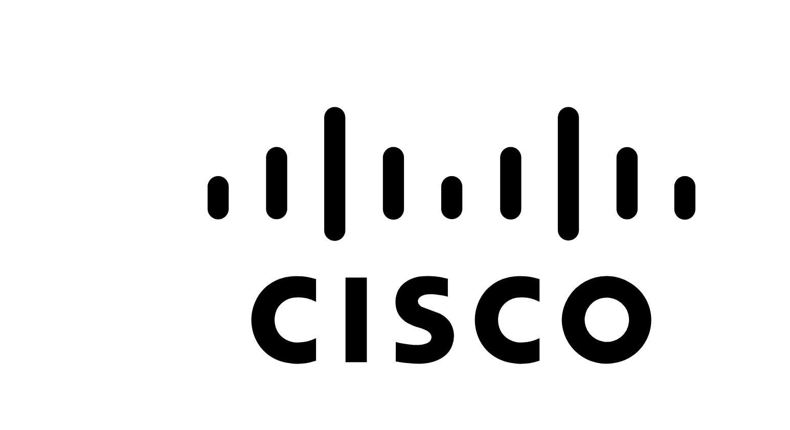
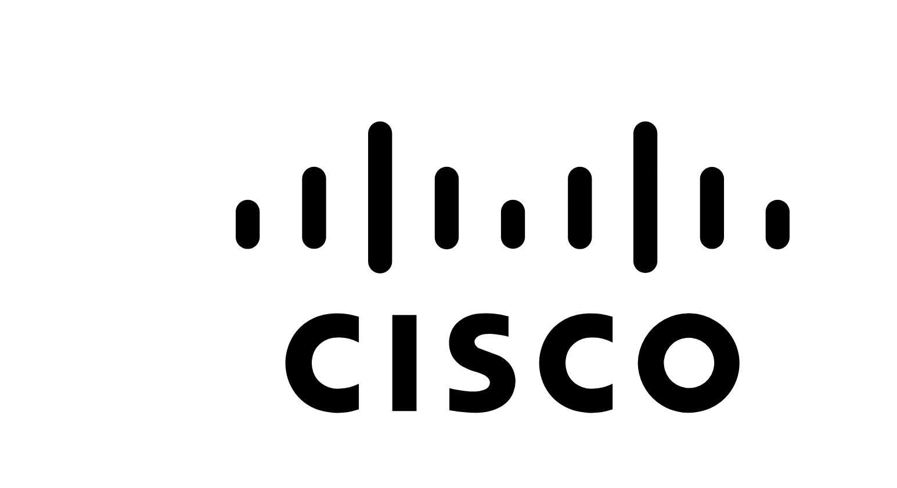

Datos Personales
- Nombre: Andrés Felipe Enciso Rincón
- Email: andruencisor@gmail.com
- Ubicación: Bogotá, Colombia
- Educación: Tecnólogo en Gestión de Redes de Datos (SENA), Bachiller Técnico en Ventas (Colegio Enrique Olaya Herrera)
Quién Soy Yo
Soy una persona apasionada por las redes y la tecnología. Mi interés por la informática y las redes me lleva a siempre estar en constante aprendizaje, buscando nuevas soluciones a problemas complejos y con el deseo de optimizar y asegurar infraestructuras tecnológicas. Me considero proactivo, con excelentes habilidades de trabajo en equipo y comunicación, lo que me permite trabajar eficazmente en proyectos colaborativos y liderar iniciativas tecnológicas.
Habilidades Técnicas
- Linux (usuario MEDIO)
- Redes y conectividad
- Certificación básica de Cisco
- Virtualización y servicios de red (DNS, DHCP, VPN)
- Programación básica de scripts
- Conocimientos en mercadeo
Perfil Profesional
Tecnólogo en Gestión de Redes de Datos con formación integral en el diseño, implementación, administración y mantenimiento de infraestructuras de redes LAN, WAN y redes inalámbricas. Capacitado en el uso de tecnologías de conectividad, equipos de telecomunicaciones, seguridad informática, virtualización, sistemas operativos (Windows y Linux), y servicios de red.
Habilidades para diagnosticar fallas, optimizar el rendimiento de redes, implementar políticas de seguridad, y administrar servicios como DNS, DHCP, VPN, servidores web y correo electrónico. Competencias en programación básica de scripts, automatización de tareas de red y conocimientos de estándares internacionales como ISO/OSI y protocolos como TCP/IP.
Capacidad de análisis, resolución de problemas técnicos, trabajo en equipo y comunicación efectiva para desempeñarse con eficiencia en entornos empresariales, centros de datos o como soporte técnico especializado.
Experiencia
- Prácticas en el Datacenter del SENA – Bogotá
2025 - Presente
Proyectos
- Servidor casero en desarrollo para aplicaciones personales
Tecnologías y Herramientas
 
